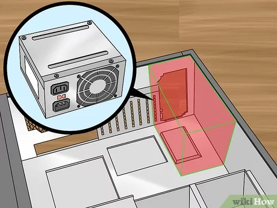

Para concluirmos a montagem do computador precisamos de colocar a fonte, a mesma serve para podermos ligar o nosso PC.
- Localize o compartimento da fonte na sua caixa;
- Coloque a fonte no sítio alinhando os espaços de parafusos da fonte com os da caixa;
- Coloque os parafusos nos espaços e aparafuse-os de forma a fixar a fonte;
- Ligue os cabos necessários e pressione o botão de power da mesma

De seguida um vídeo explicativo: